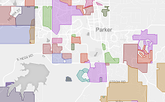
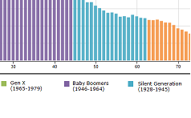
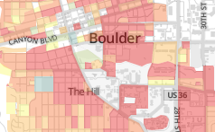
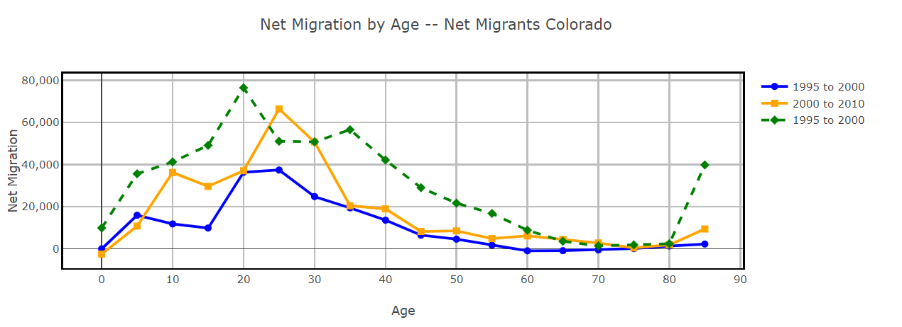
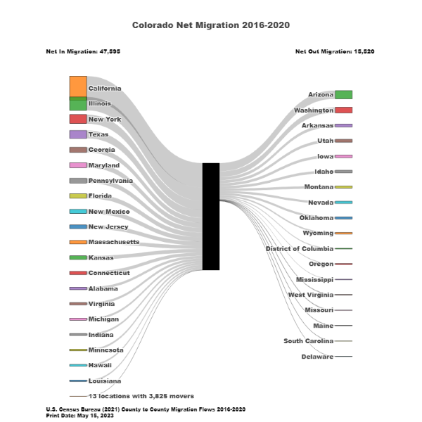

Visualizations and Interactive Maps produced by the State Demography Office
Overview and Maps
Colorado Demographic Story Map
Municipal Boundary Map

Special Districts Map
COVID Map Series
RUCA Urban-Rural Map
Population Applications
Regional and County Demographic Dashboard
Age Distribution By County
Population Change By Age: 1990-2050

Age Animation
Race/Ethnicity by Age
Colorado County Population

Population and Housing Density 2010
Poverty By Age
Animated Population Chart
Colorado County Bracketology
Historic County Populations
Historical Birthplace of Colorado Residents
Population Change: Births, Deaths, and Migration

County Net Migration by Age Dashboard
Net Migration Working Age

Net Migration flows
IRS Migration 2019-2020
Long Term Trends: Births, Deaths, Migration
Job Change and Net Migration
Housing & Households Applications
Housing Dashboard
Household Projections: Age and Household Type